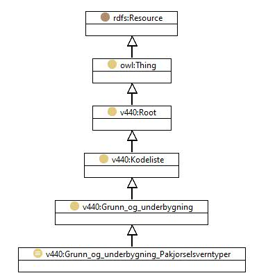

https://ontologi.atlas.vegvesen.no/v440/core/v440-owl#Grunn_og_underbygning_Pakjorselsverntyper
Class v440:Grunn_og_underbygning_Pakjorselsverntyper

rdf:type
owl:Class
rdfs:label
Påkjørselsverntyper
Collision protection types
rdfs:subClassOf
v440:Grunn_og_underbygning
owl:oneOf
[
v440:Grunn_og_underbygning_Pakjorselsverntyper_Skipspakjorsel-beskyttet_med_fylling
,
v440:Grunn_og_underbygning_Pakjorselsverntyper_Bilpakjorsel-ubeskyttet
,
v440:Grunn_og_underbygning_Pakjorselsverntyper_Annet_pakjorselsvern
,
v440:Grunn_og_underbygning_Pakjorselsverntyper_Bilpakjorsel-dimensjonert
,
v440:Grunn_og_underbygning_Pakjorselsverntyper_Skipspakjorsel-dimensjonert
,
v440:Grunn_og_underbygning_Pakjorselsverntyper_Skipspakjorsel-varsling_av_biltrafikk
,
v440:Grunn_og_underbygning_Pakjorselsverntyper_Skipspakjorsel-ubeskyttet
,
v440:Grunn_og_underbygning_Pakjorselsverntyper_Bilpakjorsel-beskyttet
,
v440:Grunn_og_underbygning_Pakjorselsverntyper_Skipspakjorsel-beskyttet_med_fender
]
v440:avsnitt
V-8.1
v440:kapittel
V-8
v440:kode
-
Instances
v440:Grunn_og_underbygning_Pakjorselsverntyper_Annet_pakjorselsvern
,
v440:Grunn_og_underbygning_Pakjorselsverntyper_Bilpakjorsel-beskyttet
,
v440:Grunn_og_underbygning_Pakjorselsverntyper_Bilpakjorsel-dimensjonert
,
v440:Grunn_og_underbygning_Pakjorselsverntyper_Bilpakjorsel-ubeskyttet
,
v440:Grunn_og_underbygning_Pakjorselsverntyper_Skipspakjorsel-beskyttet_med_fender
,
v440:Grunn_og_underbygning_Pakjorselsverntyper_Skipspakjorsel-beskyttet_med_fylling
,
v440:Grunn_og_underbygning_Pakjorselsverntyper_Skipspakjorsel-dimensjonert
,
v440:Grunn_og_underbygning_Pakjorselsverntyper_Skipspakjorsel-ubeskyttet
,
v440:Grunn_og_underbygning_Pakjorselsverntyper_Skipspakjorsel-varsling_av_biltrafikk
References
as owl:disjointUnionOf (
v440:Grunn_og_underbygning
)
as rdfs:range (
harPakjorselsvern
)
Generated with
TopBraid Composer
by
TopQuadrant, Inc.